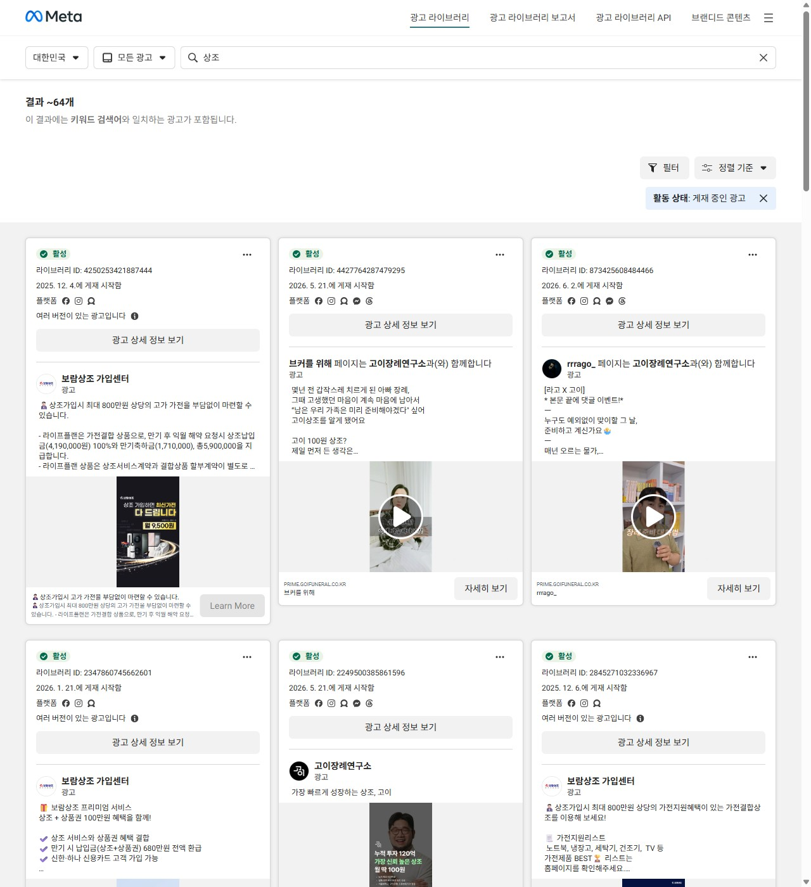
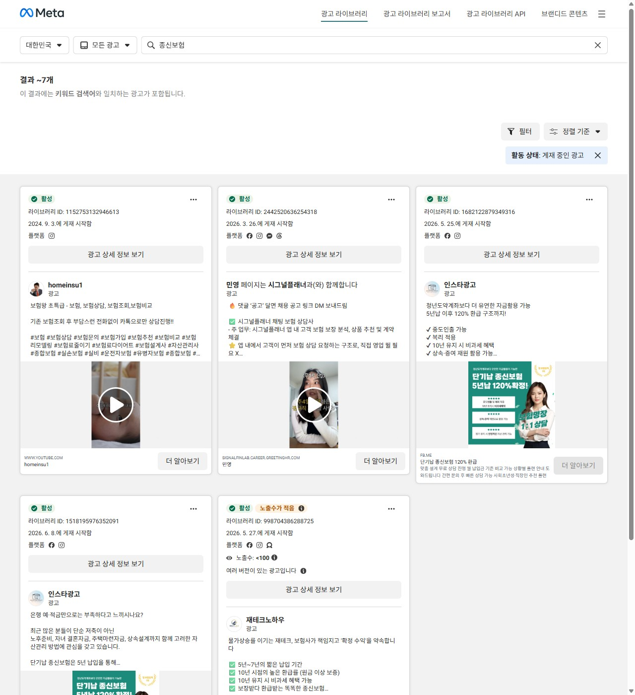

선불제는 긴급하지 않은 고관여 신뢰 상품입니다. '장례 준비'라는 회피의 언어를 '남은 가족을 위한 안심'으로 바꾸고, 고이의 투명·신뢰로 상조 불신을 넘어 100원 상조를 키우는 전략을 제안합니다.
'숨김없는 장례' — 품목별 정찰제 · 미사용 100% 공제 · 불만족 100% 환불. 고이는 불투명한 상조 시장에 투명함으로 새 표준을 만들고 있습니다.
출처 · 채용공고(누적 10만·CAC 36배↓), 고이 공식사이트(100원 상조·정찰제·환불), 언론(카카오벤처스 시드). ※ 공개자료.
"장례를 미리 준비하는 고객이 고이의 상조상조(선불제) · 장례를 미리 가입해두고, 실제 장례 때 서비스를 받는 상품. 상품에 가입하도록 설득" — 즉 수요를 '만들고' 가입으로 전환하는 일.
Meta·Google·Kakao·Naver를 운영해 저CAC로 가입을 만들고, 데이터로 예산·소구점을 최적화.
＂'후불제(필요할 때)'는 검색이 잡아줍니다. 하지만 '선불제(미리)'는 필요를 먼저 일깨워야 하는 — 가장 어려운 마케팅입니다.＂
출처 · 채용공고("선불제 스쿼드는 장례를 미리 준비하는 고객이 고이의 상조 상품에 가입하는 것을 설득").
내·가족의 죽음을 미리 떠올리기 싫고, 언제 필요할지 몰라 지금 가입할 이유가 약하다 → 광고 동기·전환 저조.
"또 사기 아냐?"라는 뿌리 깊은 불신 → 가입 직전 이탈. 신뢰가 전환의 최대 장벽.
지금 가입해도 효용은 수년 뒤 → 가치 체감이 어렵고, 가입 후 리텐션리텐션 · 가입 유지율. 선불제는 장기 유지돼야 실제 장례 정산으로 이어진다. 유지도 과제.
결정자가 본인(시니어)인지 자녀(40·50대)인지 모호. 게다가 장례·죽음은 민감 카테고리민감 카테고리 · Meta·Google이 죽음·건강 등 민감 주제 광고에 제약·심사를 두는 영역. 소재 거부·타겟 제한이 생긴다.라 매체 정책 제약.
※ 외부 관점 기반 가설 — 입사 후 가입 퍼널·코호트 데이터로 검증.
이미 장례를 고민하던 사람을 효율적으로 전환 — 훌륭하지만, 그 풀은 한정적.
여기서부터 CAC가 오른다. '죽음 준비'라는 회피 언어로는 새 수요가 안 열린다.
"죽음 준비" → "남은 가족을 위한 사랑·안심"으로 소구점을 바꾸고, 고이의 투명·신뢰로 불신을 격파.
＂선불제 마케팅은 '수요를 찾는' 게 아니라 '수요를 깨우는' 일 — 핵심은 소구점소구점 · 고객의 마음을 움직이는 핵심 메시지/이유. 무엇을 내세워 설득하느냐.입니다.＂
"싸서 매출 안 나면 투자 떨어질 때 망하지 않나?" — 고이는 보험의 in-force처럼 가입자 풀 자체가 매년 매출을 내는 자생 구조입니다.
가입당 CAC ≪ 건당 장례 정산 매출 + 가입 무출혈 → 가입이 늘수록 손실이 아니라 미래 매출이 쌓인다(LTV>CAC). 손익·집행 건수·건당 마진을 투명 공개해 증명.
선불식 상조는 할부거래법할부거래법 제27조 · 선수금의 50%를 공제조합·은행에 보전, 폐업 시 소비자 피해보상.상 선수금 보전·공제조합 + '내상조 그대로'로 폐업해도 계약 승계 — 약속은 제도가 지킨다.
화법 — "투자받아 안전"(유한) ❌ → "가입자가 쌓일수록 스스로 버는 자생 구조"(in-force) ✅. 건전성은 '말'이 아니라 손익·집행 건수를 투명 공개해 증명한다.
펀드·자산 UI는 수익률 추이를 보여줘 미래 불확실성에 대한 불안을 낮춘다 — 검증된 안심 장치.
누적 가입·실제 장례 정산(약속 이행) 건수·정찰가 유지 이력·선수금 보전율 → 과거 트랙레코드가 곧 신뢰.
랜딩·광고·리타겟·"고이 안전한가" 검색 콘텐츠에 증거로 노출 → 불신에 데이터로 답한다.
※ 지표·수치는 제안용 예시 — 실제 집행 건수·보전율·손익은 입사 후 확정해 반영. (아이디어 출처: 투자 상품의 수익률 추이 UI)
이미 낸 돈 때문에 협상력 0, 그런데도 추가·바가지. '부담'의 진짜 정체.
목돈 선납 없이 가입 시점 가격을 평생 잠금 → 경황없는 순간 바가지·충동 과소비 차단.
효심 소구. 비용을 없앤다 ❌ → '예측 가능·합리'를 약속 ✅.
안심·자존 소구. 큰 선납 없이 가볍게 시작.
장례비가 공짜는 아닙니다. 하지만 '얼마일지 모르는 불안'과 '경황없는 바가지'는 없앱니다 — 진짜 부담은 비용이 아니라 '예측 불가'입니다.


신뢰재 광고 공통 문법 = ①불신을 먼저 답한다 ②실제 사람(UGC)으로 말한다 ③구체 숫자·보장을 보여준다. 고이는 'UGC + 존속 답변 + 정찰 평생보장'을 소재 공식으로.
출처 · Meta 광고 라이브러리(대한민국, '상조'·'종신보험' 활성 광고, 2026.06 캡처).
💡 100원의 역할 = 진입장벽 제거로 저CAC 가입 → 이후 신뢰·CRM으로 유지율을 끌어올려 LTV를 만든다. '싸게 모으고, 오래 남긴다.'
민감·고관여 영역(헬스케어·의료 마케팅) 경험까지 — '예민한 주제의 소구점'을 찾아 전환시키는 일을 5년간 해왔습니다.
매출을 넘어 사람을 챙겨온 방식 — 팀원 성장·생일을 진심으로 챙겼고, 그게 제 일의 동력입니다.
불편해도 회피 않고 솔직히 부딪쳐 더 나은 결론을 만든다 — 받은 피드백을 칠판에 적어 매일 새겼습니다.
'네 일·내 일' 없이 함께 성장하는 조직을 목표로 일해왔습니다 — 고이가 바라는 동반자의 모습.
무엇보다 — 장례는 남은 가족의 슬픔을 덜어주는 일. '사람을 이롭게 하는 성장'이라는 점에서, 제가 일하고 싶은 이유와 정확히 맞닿아 있습니다.
'죽음 준비'를 '사랑을 미리 남기는 일'로 바꾸고, 고이의 투명·신뢰를 무기로 저CAC 가입을 유지·정산까지 잇겠습니다. 선불제 스쿼드의 퍼포먼스 엔진이 되어, 고이를 가장 신뢰받는 장례 브랜드로 함께 키우고 싶습니다.